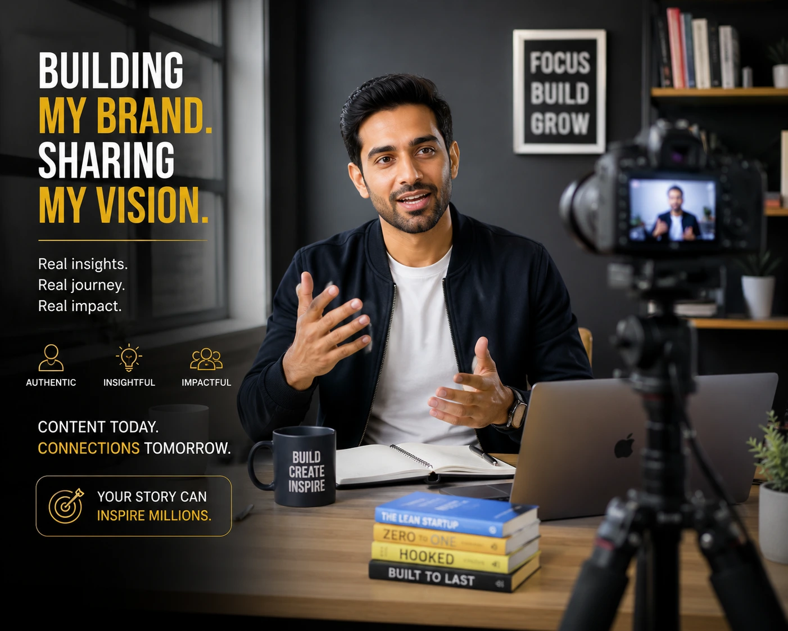
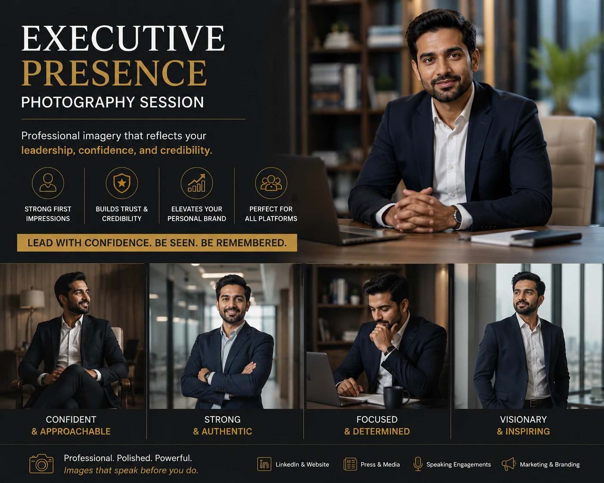

Why Founder-Led Content is the Highest ROI Strategy for Indian Startups in 2026
Introduction
There is a quiet revolution happening in how India's most successful startups are building their brands. It is not happening through expensive advertising campaigns or polished corporate content calendars. It is happening through founders showing up — on LinkedIn, on Instagram Reels, in interview videos, in behind-the-scenes content — as real, recognisable human beings with a point of view.
Founder-led content is not a trend. It is a structural shift in how trust is built between a brand and its audience. In 2026, buyers, investors, talent, and partners have learned to look past the brand page and find the person behind it. When they find a founder who communicates with clarity, authenticity, and genuine expertise — the relationship that forms is worth more than any ad spend could buy.
What Founder-Led Content Actually Means
Founder-led content is any content — written, visual, or video — created in the founder's voice, reflecting the founder's perspective, and building the founder's personal credibility alongside the brand's commercial profile. It is not ghost-written thought leadership that sounds like everyone else's. It is not a polished corporate video where the founder reads from a teleprompter. Those are content formats in search of authenticity — and audiences in 2026 identify inauthenticity in the first three seconds of a video and the first two sentences of a post.
Authentic brand storytelling through founder-led content has a different quality. It has a specific point of view. It takes a position. It shares something the founder actually thinks — not what the communications team decided was the safest version. And it is produced with enough visual and technical quality to communicate professional credibility alongside personal authenticity. The intersection of those two things — authenticity and professionalism — is exactly where personal branding for business lives.
The Commercial Case: Why This Is the Highest-ROI Strategy
Trust Compounds Through People
LinkedIn, Instagram, and YouTube all currently prioritise personal profiles over company pages. A founder with 15,000 engaged followers reaches a more commercially relevant audience than a brand page with 50,000.
Sales Cycles Shorten
When a prospect arrives having already followed the founder for three months, the trust that normally takes four meetings to build is present at the first call. Close rates are measurably higher.
Investor Relationships Built Early
Investors now check founders' LinkedIn profiles and public videos before agreeing to first meetings. A well-developed public presence is due diligence preparation, not vanity.
Talent Acquisition Changes
A founder whose authentic brand storytelling communicates compelling vision and intellectual honesty attracts top candidates before a job posting ever goes live.

CEO Video Branding: Why Video Is the Non-Negotiable Channel
Of all the formats available to a founder building a public presence, video is the most powerful and the most underused by Indian startup founders. CEO video branding should be at the centre of any founder content strategy in 2026 — because video communicates what text cannot: conviction, energy, clarity of thinking, and the genuine enthusiasm that makes a brand worth trusting.
Humanizing your brand through video is not about being entertaining. It is about being credibly human. A founder who can speak clearly and confidently on camera — about their industry, their product, their mistakes, their vision — makes their brand easier to trust. The formats that matter most:
- LinkedIn native video. A 60 to 90 second video published directly to LinkedIn — sharing one specific insight, one industry perspective, or one story from the building process — outperforms polished corporate content on every LinkedIn metric: impressions, comments, shares, and profile visits.
- Long-form interview and podcast video. Being featured on industry podcasts and webinars — and clipping those appearances into short-form content — builds credibility through third-party association and demonstrates depth of expertise.
- Behind-the-scenes and process video. Content that takes the audience inside the building process — a product decision, a team moment, a challenge navigated — is the format that does humanizing your brand through video most effectively. These are the videos that build the parasocial familiarity that makes a stranger feel like they already know the founder.
Executive Presence Photography: The Visual Identity Layer
Video is the most powerful format. But executive presence photography is the visual identity layer that makes everything else work better. Every touchpoint where a founder appears publicly — LinkedIn profile, website about page, speaking engagement bio, press feature, investor deck — includes a founder image. And that image is doing one of two things: building credibility or undermining it.
A smartphone selfie or a cropped family photo communicates, unconsciously but unmistakably, that this founder does not take their public presence seriously. A professionally shot, art-directed set of executive portraits communicates the opposite. The specific shots every founder's visual library should include:
Hero Portrait
- Clean, direct, professional with personality
- LinkedIn profile, press, and speaking bio image
- The most-seen image in your public presence
- Must be excellent — no compromise here
Working Portraits
- Founder at desk, in a meeting, reviewing work
- Accompanies LinkedIn articles and investor decks
- Communicates competence and context
- Multiple setups for variety across channels
Environmental and Team
- Founder in genuine interaction with team members
- Founder in the physical space where work happens
- Communicates culture and leadership style
- Grounds the brand story in specific physical reality

LinkedIn Content Strategy for Founders: The Framework That Works
LinkedIn content strategy for founders is not about posting frequency — it is about posting with purpose and consistency. Here is the framework that produces results for Indian startup founders in 2026:
- One anchor post per week. One substantive, specific, opinionated post on a topic the founder has genuine expertise in. Not a trend reaction. Not an inspirational quote. A specific point of view on a specific question within the founder's domain. This is the content that builds intellectual credibility over time.
- One personal or process post per week. One post sharing something from the building process — a decision made, a lesson learned, a challenge currently being navigated. This achieves in writing what humanizing your brand through video achieves in video format: parasocial familiarity that makes a stranger feel they already know the founder.
- Video once per fortnight. A 60 to 90 second native LinkedIn video, every two weeks, on a topic specific enough to be genuinely useful and personal enough to feel like it could only come from this founder. The format that builds the fastest following and drives the highest profile-visit rate of any LinkedIn content type.
- Engagement as content. Ten thoughtful comments per week on relevant posts extends the founder's visibility to new audiences and demonstrates the quality of thinking that followers can expect from the founder's own profile.
- Consistency over volume. Two posts per week, every week, for twelve months outperforms any burst-then-disappear approach. Consistency itself is a signal — it communicates the discipline and reliability that personal branding for business is ultimately built on.
Authentic Brand Storytelling: The Content That Cannot Be Outsourced
There is a version of founder-led content that can be supported — by a content strategist, a video production team, a photographer — but not replaced. The founder's specific perspective, their industry knowledge, their way of framing problems and articulating solutions: this is the content that no agency or ghostwriter can manufacture.
Authentic brand storytelling requires the founder to do the thinking. The production team, the video editor, the LinkedIn strategist are amplifiers — they make the founder's thinking more accessible, more visually compelling, more consistently distributed. But the thinking has to be the founder's own. The founders winning the attention game in India's startup ecosystem right now share one characteristic: they have developed a specific, articulable point of view on their industry and share it consistently in public.
This is not a communications exercise. It is a leadership exercise. The act of articulating your perspective clearly enough to publish it is itself a clarifying discipline — it makes the founder more effective in pitch meetings, team conversations, and sales calls. Founder-led content is not just a distribution strategy. It is a thinking practice.
Building the Production Infrastructure
Founder-led content at the level that produces commercial results requires professional production infrastructure. When a founder appears consistently on video with clean audio, good lighting, and a considered visual treatment — it communicates professionalism without saying a word about it. When a LinkedIn profile features executive presence photography that is clearly professionally produced, it elevates the perceived quality of every piece of content that follows.
The production stack that makes CEO video branding work at a professional level: a dedicated video production session every quarter producing 8 to 12 short-form clips, a consistent visual identity applied through colour grading and motion graphics, a library of executive presence photography refreshed annually, and a distribution strategy that ensures content reaches the right audiences across LinkedIn, Instagram, and YouTube.
Conclusion
In 2026, the most powerful brand asset an Indian startup founder can own is not a product feature, a marketing budget, or a press mention. It is a public presence that communicates who they are, what they believe, and why their work matters — consistently, authentically, and with the visual quality that signals they take it seriously.
Founder-led content, CEO video branding, executive presence photography, and a disciplined LinkedIn content strategy for founders are not separate tactics. They are components of a single integrated strategy for building the kind of trust that converts — in sales meetings, fundraising rounds, talent conversations, and partnership discussions. The founders investing in this now are building a competitive advantage that compounds. The ones waiting are watching the gap widen.
At The PhD Ads, we build the production infrastructure for founder-led content — from executive presence photography sessions to cinematic CEO video branding content, built for the platforms where India's business community lives and decides.
Key Topics
Ready to Build Your Founder Content Infrastructure?
At The PhD Ads, we specialise in founder-led content production — executive presence photography, CEO video branding, and LinkedIn-ready content built for Indian startup founders who are serious about their personal brand driving business results.
Email: team@e2o.in